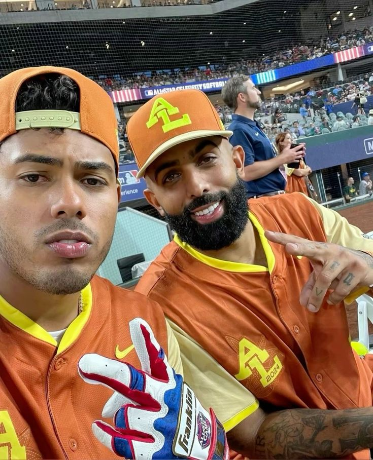
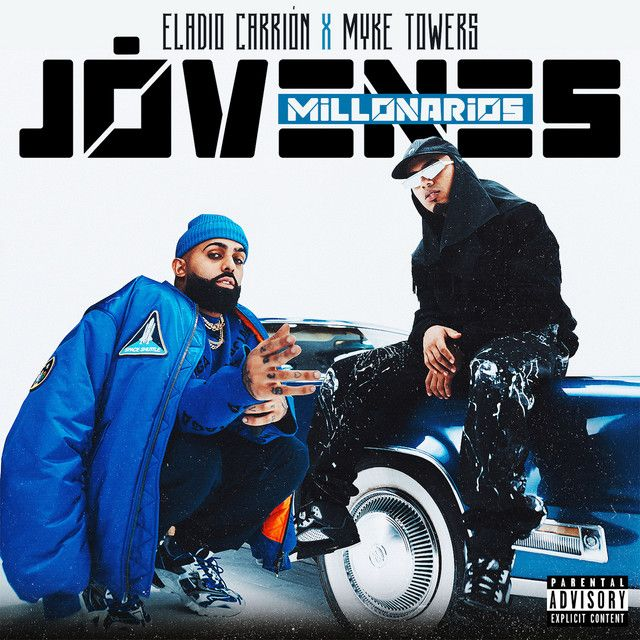

Myke towers es otro de los colaboradores más importantes en la carrera de Eladio Carrión. Los dos artistas tienen estilos similares dentro del rap y el trap, lo que hace que sus canciones tengan mucha energía y rimas complejas. Sus colaboraciones destacan por el flow, la técnica al rapear y la química musical que tienen cuando trabajan juntos.

El origen de la canción Jóvenes Millonarios está en la colaboración entre Eladio Carrión y Myke Towers, dos artistas que crecieron dentro del movimiento del trap latino. La canción fue creada durante el proceso de producción del álbum Sauce Boyz 2, lanzado en 2021.
El tema surge de la idea de representar cómo ambos artistas lograron alcanzar el éxito en la música siendo todavía jóvenes. En la canción cuentan, desde su propia perspectiva, cómo pasaron de esforzarse para entrar en la industria musical a convertirse en artistas reconocidos. El título “Jóvenes Millonarios” simboliza ese cambio de vida: jóvenes que, gracias a su talento y trabajo, lograron fama, dinero y reconocimiento dentro del género urbano.
Jovenes Millonarios